A car engine has ~200 moving parts; we use diagrams to understand it.
An ATM system has thousands of interacting objects; we need models even more.
Software is invisible and abstract; you cannot see or touch it.
Models make software visible, discussable, and understandable.
Unified Modeling Language (UML)
The industry-standard visual language for specifying, constructing, and documenting software systems.
The Three System Perspectives:
Functional Behavior
Static Structure
Dynamic Behavior
Functional Perspective
What does the system do?
Why does someone use it?
Use Case Diagram, Activity Diagram
Static Perspective
What objects are involved?
What are their attributes?
What operations do they perform?
How are they related to each other?
Class Diagram, Object Diagram
Dynamic Perspective
How do objects interact over time?
Sequence/State Diagram, Activity Diagram
The ATM System (5 minutes)
Write down one item to describe an ATM system from each of the three perspectives:
Functional (what?)
Static (with what?)
Dynamic (how?)
Use Case Diagrams
A Use Case diagram answers the question: "What does this system do for whom?"
High-level view, no implementation details
Shows the services a system provides and who uses them
Starting point for every other model
Use Case Diagrams
Actors (Stick Figures): External entities interacting with the system.
Use Cases (Ovals): Major system functionalities, start with a verb.
Relationships:
Association (Solid Line): Connects an actor to a use case.
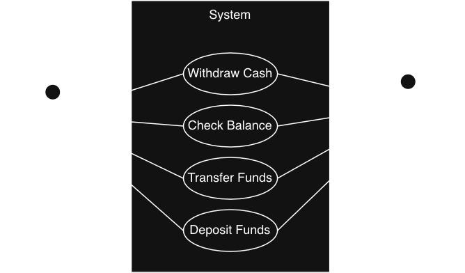
A use case diagram showing the Customer on the left with interaction lines to use cases Withdraw Cash, Check Balance, Transfer Funds, and Deposit Funds, which are all contained in the System. The Bank is on the right with interaction lines to each of the four use cases.
Activity Diagrams
Model workflow or process flow of a system.
Notation:
Start (solid circle) required
End (circle with solid circle inside)
Activities (rounded rectangles)
Flow between activities (arrows)
Conditions (diamonds)
Forks (horizontal bars, 1 in many out)
Joins (horizontal bars, many in 1 out)
Activity Diagrams
The Withdraw Cash activity diagram flows top to bottom. The diagram begins with an initial pseudostate, represented as a solid filled circle, at the top center. Flow moves down to an activity labeled Insert Card, then continues down to Input PIN. From Input PIN, flow moves down to a decision node labeled "card accepted?" If the answer is yes, flow moves right to Select Action, then down to Withdraw Cash, then down to an abbreviated activity labeled "…and so on… (verify funds, dispense, receipt, etc.)," which represents the remainder of the withdrawal sub-process. That path then leads down to a wide horizontal join bar near the bottom of the diagram. If the card is not accepted, flow moves left from the "card accepted?" decision to a second decision node labeled "tried 3 times?" If the answer is yes, flow moves down to a thick horizontal fork bar, which splits into two concurrent parallel flows. The left branch leads to Terminate Transaction and the right branch leads to Notify Bank. Both branches flow down and converge at the same wide horizontal join bar that also receives the successful withdrawal path. If the answer to "tried 3 times?" is no, flow curves back up and returns to Input PIN, allowing the customer to try again. All paths — the two parallel branches from the failed authentication route and the completion of the successful withdrawal route — synchronize at the join bar before flow continues down to Eject Card. From there, flow moves down to the final pseudostate, represented as a solid filled circle inside an outer ring, which marks the end of the activity.
Activity Diagrams
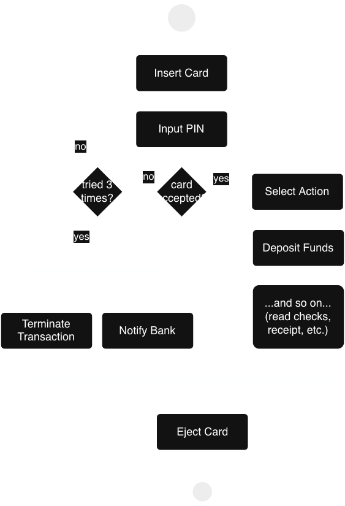
The Deposit Cash activity diagram flows top to bottom. The diagram begins with an initial pseudostate, represented as a solid filled circle, at the top center. Flow moves down to an activity labeled Insert Card, then continues down to Input PIN. From Input PIN, flow moves down to a decision node labeled "card accepted?" If the answer is yes, flow moves right to Select Action, then down to Deposit Funds, then down to an abbreviated activity labeled "…and so on… (read checks, receipt, etc.)," which represents the remainder of the deposit sub-process. That path then leads down to a wide horizontal join bar near the bottom of the diagram. If the card is not accepted, flow moves left from the "card accepted?" decision to a second decision node labeled "tried 3 times?" If the answer is yes, flow moves down to a thick horizontal fork bar, which splits into two concurrent parallel flows. The left branch leads to Terminate Transaction and the right branch leads to Notify Bank. Both branches flow down and converge at the same wide horizontal join bar that also receives the successful deposit path. If the answer to "tried 3 times?" is no, flow curves back up and returns to Input PIN, allowing the customer to try again. All paths — the two parallel branches from the failed authentication route and the completion of the successful deposit route — synchronize at the join bar before flow continues down to Eject Card. From there, flow moves down to the final pseudostate, represented as a solid filled circle inside an outer ring, which marks the end of the activity.
Activity Diagrams
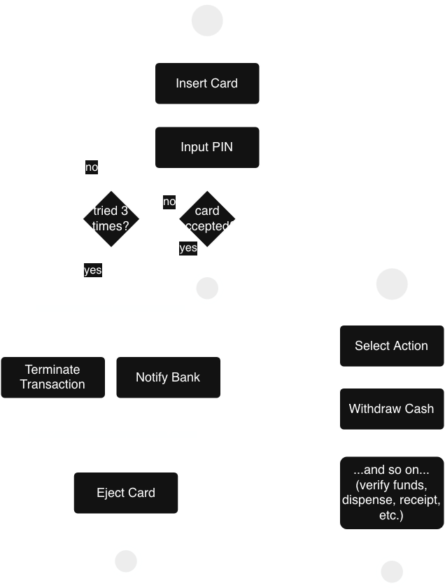
The authenticate activity diagram flows top to bottom. The diagram begins with an initial pseudostate, represented as a solid filled circle, at the top center. Flow moves down to an activity labeled Insert Card, then continues down to Input PIN. From Input PIN, flow moves down to a decision node labeled "card accepted?" If the answer is yes, flow moves down to the final pseudostate, represented as a solid filled circle inside an outer ring, which marks the end of the authenticate activity. If the card is not accepted, flow moves left from the "card accepted?" decision to a second decision node labeled "tried 3 times?" If the answer is yes, flow moves down to a thick horizontal fork bar, which splits into two concurrent parallel flows. The left branch leads to Terminate Transaction and the right branch leads to Notify Bank. Both branches flow down and converge at the same wide horizontal join bar that also receives the successful withdrawal path. If the answer to "tried 3 times?" is no, flow curves back up and returns to Input PIN, allowing the customer to try again. The two parallel branches from the failed authentication route synchronize at the join bar before flow continues down to Eject Card. From there, flow moves down to the final pseudostate, represented as a solid filled circle inside an outer ring, which marks the end of the authenticate activity. The new withdraw cash activity diagram flows top to bottom. The diagram begins with an initial pseudostate, represented as a solid filled circle, at the top center. Flow moves down to an activity labeled Select Action, then down to Withdraw Cash, then down to an abbreviated activity labeled "…and so on… (verify funds, dispense, receipt, etc.)," which represents the remainder of the withdrawal sub-process. That path then leads down to a wide horizontal join bar near the bottom of the diagram.
Relationships: Include
Always happens (dotted line)
Arrow points from base case to included case.
Models mandatory sub-behavior factored out to eliminate duplication.
Example: Every transaction always includes Authentication.
Relationships: Include
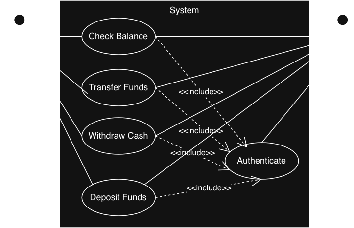
A use case diagram showing the Customer on the left of the system box and the bank on the right. The system box includes four use cases: Withdraw Cash, Transfer Funds, Balnce Inquiry, and Deposit Funds. A dashed include arrow extends from each of the four use cases to a fifth use case for Authenticate. The customer has a solid line relationship to all four use cases, the bank has one to all five, including Authenticate.
Relationships: Include
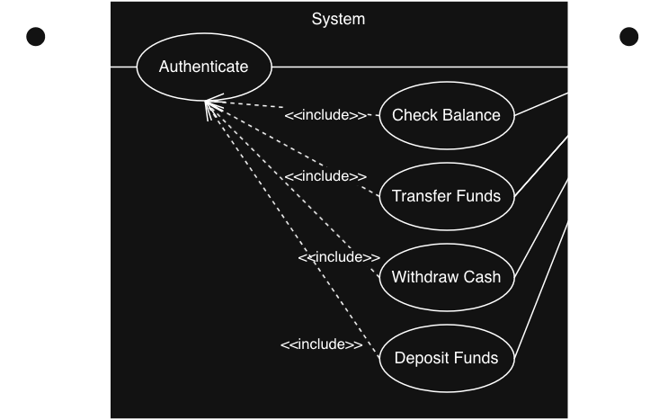
A use case diagram showing the customer on the left of the system and the bank on the right. The customer has a relationship with the authenticate use case. The bank has a relationship with four use cases: withdraw cash, transfer funds, Check Balance, and deposit funds. Each of these four use cases has a dashed include arrow relationshp with authenticate.
Relationships: Include
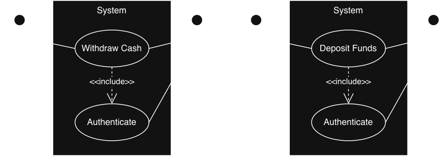
A use case diagram showing a customer on the left of the system and the bank on the right. The customer has a relationship with the withdraw cash use case, which has a dashed include arrow going to the authenticate use case. Bank has an association with withdraw cash and authenticate. A copy of the use case diagram is also represented for Deposit Funds instead of Withdraw Cash.
Relationships: Extend
Sometimes happens (dotted line)
Arrow points from extending case to base case.
Models exceptional flows that may or may not occur.
Example: WithdrawCash may extend with "Non-Sufficient Funds".
Relationships: Generalization
Generalization (Solid Arrow with Open Triangle): Is a kind of
Similar to abstract classes.
Child use case (or actor) is a specialized version of the parent.
Arrow goes from child to parent.
Example: Transfer to Another Account is a kind of Transfer Funds.
Advanced Relationships
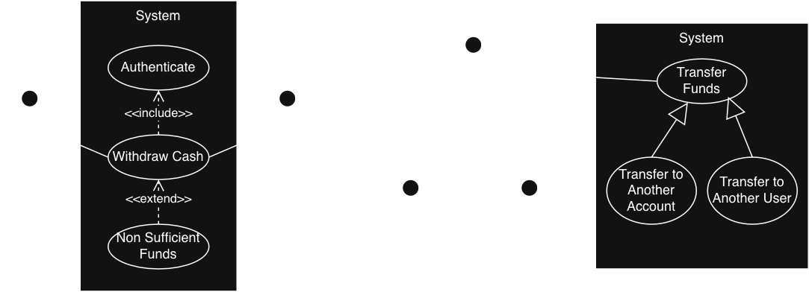
A use case diagram showing the Customer on the left with a solid line to the Withdraw Cash use case, which has a dotted include line pointing to the Authenticate use case. The Non Sufficient Funds use case has a dotted extend line pointing to Withdraw Cash use case. A second use case diagram showing the Customer on the left with child actors Adult Customer and Minor Customer. Customer is associated with Transfer Funds use case, which has Transfer to Another Account and Transfer to Another User as child use cases.
Relationshp Types (10 minutes)
Work in pairs. Name and explain the relationship type:
After a customer withdraws cash, if SMS notifications are enabled, the ATM may send a text message confirming the amount withdrawn.
When a customer enters an incorrect PIN, if the card has been flagged by the bank's fraud detection service, the ATM may retain the card.
An International Withdrawal follows all the steps of a standard Withdraw Cash transaction but additionally performs a live currency conversion before dispensing cash.
A Corporate Account Holder can perform all the same ATM transactions as a standard Customer but is also permitted to initiate same-day wire transfers above the standard daily limit.
Every time a customer initiates a Deposit Funds transaction, the system must first verify that the account is not frozen before allowing the transaction to proceed.
Candidate Object Identification
Techniques to find candidate classes:
Noun Extraction
BCE Taxonomy
Turning Candidate Objects into Classes
For each candidate, evaluate it using the E.A.R. framework:
Entity: What "thing" is it? Does it contain component parts?
Attributes: What attributes describe the entity? Note that while these become fields, not all fields (like flags or counters) are attributes.
Relationships: What other entities does this entity need or use?
Noun Extraction (5 minutes)
Work in pairs.
Extract the nouns from this requirement and classify them as an Entity (Object) or an Attribute.
A customer interacts with the ATM to make a withdrawal from their account. The account checks the current balance and a daily withdrawal limit. The cash is then dispensed and a receipt is printed.
The BCE Taxonomy
For software systems, we can categorize our classes:
Boundary: Interfaces with actors
Control: Implements system logic and coordinates tasks
Entity: Stateful objects containing system information
The Golden Rule: Boundaries never talk directly to Entities. All communication goes through Control objects.
Boundary Objects
Inside our system, but interface with elements outside the system.
They are a "portal" or "gateway" between outside and inside.
Boundary Objects: CardReader Example
The Problem: Hardware devices speak a low-level language your application should never have to know.
The Solution: Wrap it in a Boundary Object.
// The rest of the system never sees device registers or bit patterns.
// It only knows one thing:
cardReader.acceptCard();
Control Objects
Orchestrate the flow and manage behavior.
Coordinate the other objects so neither entity nor boundary objects have to interact directly.
One main controller initializes everything; separate controllers per major use case.
Control Objects: ATM Example
Application Scope vs. Transaction Scope:
AtmController: Handles system startup, main menus, and hardware initialization; lives until the ATM shuts down.
WithdrawController: Manages a single withdrawal flow; created dynamically and destroyed when transaction finishes.
Architectural Value: Each transaction gets its own controller, state, and lifecycle, ensuring no shared mutable state between transactions.
Entity Objects
Represent information, data, and state needed by the system; not boundary objects.
They are not just data containers; they provide methods that act on their own data.
Entity Objects: Receipt Example
The printer is a boundary object, but the receipt is likely an entity object.
The Receipt Entity is build up incrementally.
// State accumulates as the transaction progresses
receipt.setDateTime(LocalDateTime.now());
receipt.setAccountNumber(account.getAccountNumber());
receipt.setFinalBalance(account.getBalance());
// The Entity is passed to Boundary objects as needed
printer.print(receipt); // Output to hardware
transactionLog.archive(receipt); // Output to local storage
BCE Identification (5 minutes)
List every noun you can extract from the description (aim for at least 12).
For each noun, classify it as Boundary (B), Control (C), Entity (E), or Not a class (N).
Identify at least one Control class that is implied but not explicitly stated in the description.
A bank offers ATM services to its customers. Customers insert a debit card and enter a PIN on the screen to authenticate. After successful authentication, customers can withdraw cash, deposit funds, transfer money between accounts, or check a balance. The ATM machine includes a card reader, a cash dispenser, a deposit slot, a printer for receipts, and a camera for security. All transactions are verified with the bank's authorization service. Unrecognized cards are rejected. A logger records all transaction events.
Class Diagrams
Divided into three compartments:
Name
Attributes/State
Operations/Behavior
Visibility modifiers:
+ Public
- Private
# Protected
Class Diagrams
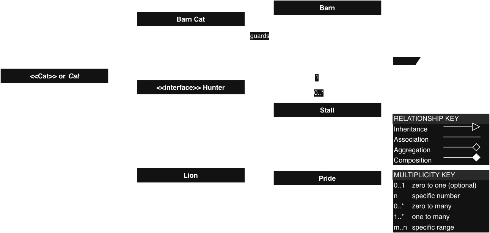
A UML class diagram containing the following classes, enumerations, and relationships. Class: Cat, an abstract class with private attributes age of type int and weight of type double, and public methods eat taking a food parameter of type String returning boolean, getAge returning int, and getWeight returning double. Class: Barn Cat with private attribute name of type String and public method getName returning String. Interface: Hunter with public method pounce returning boolean. Class: Lion with private attribute maneLength of type double and public method getManeLength returning double. Class: Barn with private attributes location of type String, wallColor of type Color, and roofColor of type Color, and public method getLocation returning String. Class: Stall with private attribute size of type double and public method getSize returning double. Class: Pride with private attribute lions as an array of Lion and public method getLocation returning String. Enumeration: Color with values RED, BLUE, and GREEN; a note states it is not necessary to connect an enumerated type to classes that use it. Relationships: Barn Cat inherits from Cat; Lion inherits from Cat; Cat implements the Hunter interface shown with a dashed inheritance arrow; Barn Cat has an association labeled guards pointing to Barn; Barn has a composition relationship to Stall where one Barn contains zero to many Stalls (multiplicity 1 on the Barn side and 0..* on the Stall side); Lion has an aggregation relationship to Pride. Legend - Relationship Key: Inheritance is shown as a solid line with an open arrowhead; Association is shown as a solid line; Aggregation is shown as a solid line with an open diamond; Composition is shown as a solid line with a filled diamond. Legend - Multiplicity Key: 0..1 means zero to one (optional); n means a specific number; 0..* means zero to many; 1..* means one to many; m..n means a specific range.
Class Diagram (10 minutes)
Use the objects identified in the BCE activity to build a class diagram.
Include all 3 classes: Customer, ATM, Account.
Complete name, 1-2 fields, and 1 method for each.
Draw association lines between classes where appropriate.
Object Diagrams
Focus on concrete instances of objects (vs. class definitions).
Capture the state of a system object and its relationships at a specific moment in time.
Used less frequently than Class Diagrams.
Useful for depicting an isolated part of a complex system.
Often used to visualize the current state of complex data structures.
Object Diagrams
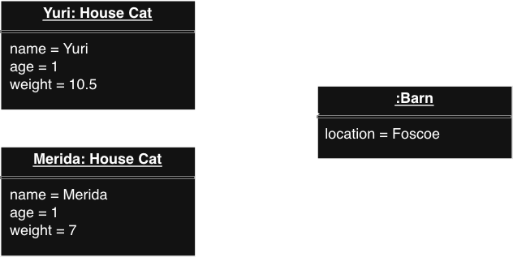
The object diagram shows two Cat objects, one named Yuri age 1 with a weight of 10.5 and another named Merida age 1 with a weight of 7. Both have an association with a Barn object with a location of Foscoe.
Sequence Diagrams
Model interactions between objects over time.
Can be high-level (system overview) or low-level (method calls).
Can include conditionals and loops.
Notation:
Objects (boxes across top)
Lifelines (dashed vertical lines)
Messages (horizontal arrows)
Activation bars (thin rectangles)
Sequence Diagrams
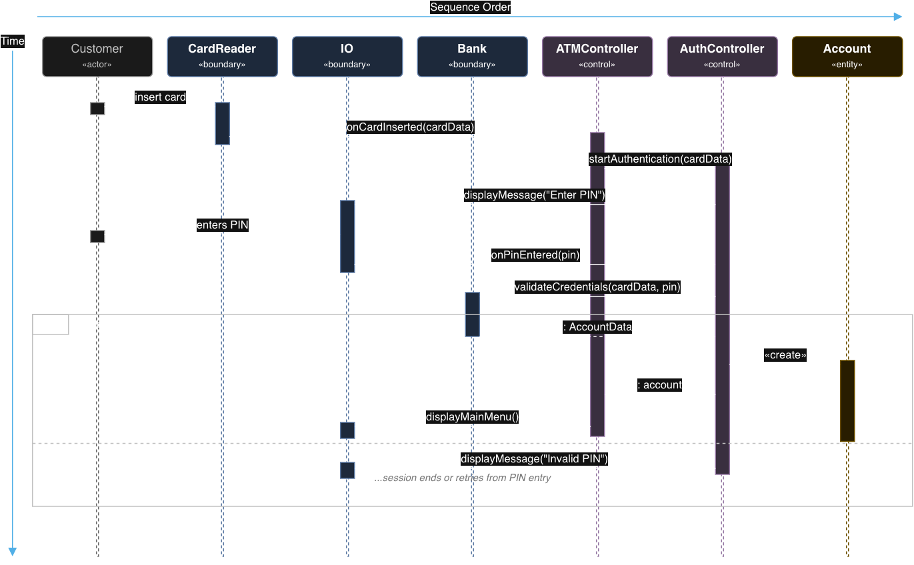
The diagram is a UML sequence diagram for the Authenticate use case that shows seven participants arranged left to right across the top of the diagram. The participants in order from left to right are Customer, which is gray and carries no stereotype; CardReader, which is blue and labeled boundary; IO, which is blue and labeled boundary; Bank, which is blue and labeled boundary; ATMController, which is purple and labeled control; AuthController, which is purple and labeled control; and Account, which is amber and labeled entity. Each participant box has a dashed vertical lifeline extending downward from it for the full height of the diagram. Thin solid rectangles called activation bars appear on each lifeline to indicate when that participant holds an active execution context. The sequence begins with the Customer sending a solid arrow labeled insert card to CardReader. At this moment a short activation bar appears on the Customer lifeline and a longer activation bar appears on the CardReader lifeline. CardReader then sends a solid arrow labeled onCardInserted with a cardData parameter to ATMController, crossing over all the lifelines between them. When this message arrives, a long activation bar begins on ATMController that extends nearly to the bottom of the diagram. ATMController then sends a solid arrow labeled startAuthentication with a cardData parameter to AuthController, which starts a long activation bar on AuthController. AuthController then sends a solid arrow labeled displayMessage with the string Enter PIN back to the left, crossing over Bank and ATMController to reach IO. This causes an activation bar to begin on the IO lifeline. The Customer then sends a dashed arrow labeled enters PIN to IO, which causes a brief second activation bar on the Customer lifeline. IO responds by sending a solid arrow labeled onPinEntered with a pin parameter back to the right to AuthController. AuthController then sends a solid arrow labeled validateCredentials with cardData and pin parameters to the left, reaching Bank. An activation bar appears on the Bank lifeline. Bank sends a dashed return arrow labeled AccountData back to AuthController, after which the Bank activation bar ends. AuthController then sends a short dashed arrow labeled create to Account on the right, which starts the activation bar on the Account lifeline. An activation bar appears on Account and remains active through the end of the diagram. AuthController then sends a short dashed return arrow labeled account back to the left to ATMController. The AuthController activation bar ends at this point. Finally, ATMController sends a solid arrow labeled displayMainMenu to the left to IO, where a second brief activation bar appears. The ATMController activation bar ends after this final message. A vertical arrow indicates that time is depicted going down and a horizontal arrow indicates that sequence order goes horizontally from left to right.
Sequence Diagrams (25 minutes)
Organize into small groups (3-4).
Begin work on the Sequence Diagram Assignment in the Canvas course.
State Diagrams
Models behavior of a single object.
Models one part of the system.
Similar to state machine diagrams (from Theory).
Notation:
Start (solid circle) required
End (circle with solid circle inside) optional
States (rounded rectangles)
Transitions (arrows between states)
Inside a State
Name (required, descriptive)
Attributes (values associated with a state)
Activities (actions the state performs)
Entry: Fires when state is entered
Do: Runs while inside the state
Exit: Fires when state is left
State Diagrams
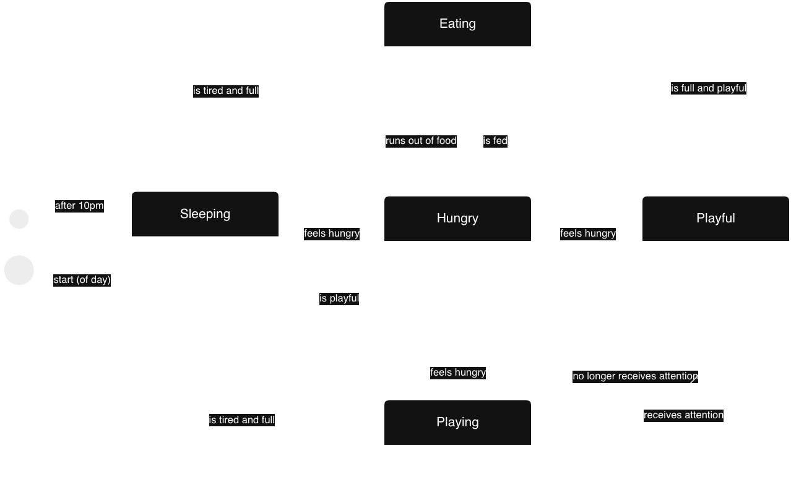
This state diagram models the behavior of a cat using five distinct states: Eating, Hungry, Playing, Sleeping, and Playful. Each state describes what the cat is doing during that period, and labeled arrows between states represent the conditions or events that cause the cat to transition from one state to another. The start is triggered by the start of the day and moves to the Sleeping state. The Sleeping state has three internal actions. On entry, the cat lies down. While in the state, the cat snores. On exit, the cat opens its eyes. From the Sleeping state, the cat transitions to the Hungry state when it feels hungry, and it transitions to the Playful state when it is feeling playful. The Hungry state has two internal actions. On entry, the cat finds a human. While in the state, the cat meows. From the Hungry state, the cat transitions back to the Eating state when it is fed. The transition between Hungry and Eating is bidirectional, meaning a cat that is eating can run out of food and return to Hungry, and a cat that is Hungry can be fed and return to Eating. The Eating state has three internal actions. On entry, the cat purrs. While in the state, the cat meows. On exit, the cat licks its lips. From the Eating state, the cat can transition to three other states. If the cat runs out of food, it transitions to the Hungry state. If the cat becomes tired and full, it transitions to the Sleeping state. If the cat is full and feeling playful, it transitions to the Playful state. The Playful state has two internal actions. While in the state, the cat drags a toy to a human and meows. From the Playful state, the cat transitions to the Hungry state when it feels hungry, and it transitions to the Playing state when it no longer receives attention from a human. The Playing state has two internal actions. While in the state, the cat zooms around. On exit, the cat lies down. From the Playing state, the cat transitions to the Sleeping state when it becomes tired and full, it transitions to the Playful state when it receives attention from a human, and it transitions to the Hungry state when it feels hungry. The end state is transitioned to from the Sleeping state after 10pm.
State Diagram (10 minutes)
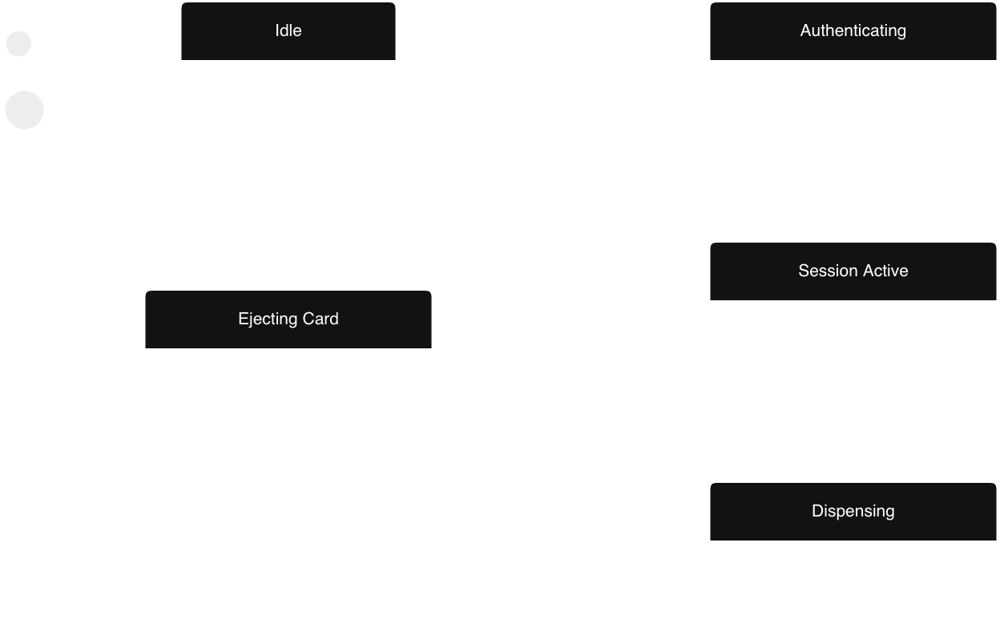
This is a partially completed UML state diagram for an ATM system. The diagram contains five states and two pseudostate markers. No transitions between states are shown. Students are expected to draw and label all transitions as part of a class activity. The two pseudostate markers appear on the left side of the diagram. One represents the initial pseudostate, indicating where the system begins. The other represents the final pseudostate, indicating where the system ends. The five states are as follows. The Idle state has three internal actions: on entry the system displays a welcome screen, while active the system waits for a card to be inserted, and on exit the system clears the welcome screen. The Authenticating state has three internal actions: on entry the system reads the card data and displays a PIN prompt, while active the system validates the card and PIN, and on exit the system clears all data from the display. The Session Active state has three internal actions: on entry the system displays the transaction menu, while active the system waits for a user selection and processes the transaction, and on exit the system logs the transaction result. The Dispensing state has three internal actions: on entry the system activates the cash mechanism and printer, while active the system dispenses cash and prints a receipt, and on exit the system confirms that the cash and receipt have been taken. The Ejecting Card state has three internal actions: on entry the system activates the card motor, while active the system waits for the customer to remove the card, and on exit the system confirms the card has been removed.